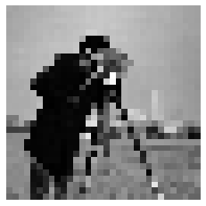
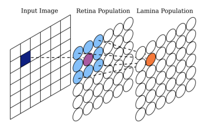
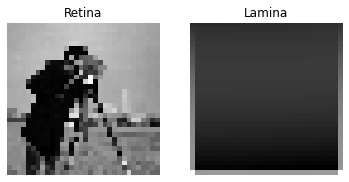

Tutorial 6: Using Connectivity Patterns
[1]:
# Add the library to the path
# If jupyter cannot find SNS-Toolbox
import os
import sys
module_path = os.path.abspath(os.path.join('..'))
if module_path not in sys.path:
sys.path.append(module_path)
from sns_toolbox.connections import NonSpikingPatternConnection
from sns_toolbox.networks import Network
from sns_toolbox.neurons import NonSpikingNeuron
from sns_toolbox.renderer import render
import numpy as np
import matplotlib.pyplot as plt
import cv2 as cv
import sys
[2]:
img = cv.imread('/home/will/Pictures/sample_images/cameraman.png') # load image file
shape_original = img.shape # dimensions of the original image
dim_long = max(shape_original[0],shape_original[1]) # longest dimension of the original image
dim_desired_max = 32 # constrain the longest dimension for easier processing
ratio = dim_desired_max/dim_long # scaling ratio of original image
img_resized = cv.resize(img,None,fx=ratio,fy=ratio) # scale original image using ratio
img_color = cv.cvtColor(img, cv.COLOR_BGR2RGB) # transform the image from BGR to RGB
img_color_resized = cv.cvtColor(img_resized, cv.COLOR_BGR2RGB) # resize the RGB image
img_gray = cv.cvtColor(img_resized, cv.COLOR_BGR2GRAY) # convert the resized image to grayscale [0-255]
shape = img_gray.shape # dimensions of the resized grayscale image
img_flat = img_gray.flatten() # flatten the image into 1 vector for neural processing
flat_size = len(img_flat) # length of the flattened image vector
plt.figure()
plt.imshow(img_gray,cmap='gray')
plt.axis('off')
new_img = cv.imread('/home/will/Documents/SNS Toolbox Paper LM2022/figures/kernel example/kernel diagram.png') # load image file
new_img = cv.cvtColor(new_img, cv.COLOR_BGR2RGB) # transform the image from BGR to RGB
plt.figure()
plt.imshow(new_img)
plt.axis('off')
[2]:
(-0.5, 2758.5, 1742.5, -0.5)


[3]:
# General network
R = 20.0 # range of network activity (mV)
neuron_type = NonSpikingNeuron() # generic neuron type
net = Network(name='Visual Network') # create an empty network
# Retina
net.add_population(neuron_type,shape,name='Retina') # add a 2d population the same size as the scaled image
net.add_input('Retina', size=flat_size,name='Image') # add a vector input for the flattened scaled image
net.add_output('Retina',name='Retina Output') # add a vector output from the retina, scaled correctly
# Lamina
net.add_population(neuron_type,shape,name='Lamina')
del_e_ex = 160.0 # excitatory reversal potential
del_e_in = -80.0 # inhibitory reversal potential
k_ex = 1.0 # excitatory gain
k_in = -1.0/9.0 # inhibitory gain
g_max_ex = (k_ex*R)/(del_e_ex-k_ex*R) # calculate excitatory conductance
g_max_in = (k_in*R)/(del_e_in-k_in*R) # calculate inhibitory conductance
g_max_kernel = np.array([[g_max_in, g_max_in, g_max_in], # kernel matrix of synaptic conductances
[g_max_in, g_max_ex, g_max_in],
[g_max_in, g_max_in, g_max_in]])
del_e_kernel = np.array([[del_e_in, del_e_in, del_e_in], # kernel matrix of synaptic reversal potentials
[del_e_in, del_e_ex, del_e_in],
[del_e_in, del_e_in, del_e_in]])
e_lo_kernel = np.zeros([3,3])
e_hi_kernel = np.zeros([3,3]) + R
connection_hpf = NonSpikingPatternConnection(g_max_kernel,del_e_kernel,e_lo_kernel,e_hi_kernel) # pattern connection (acts as high pass filter)
net.add_connection(connection_hpf,'Retina','Lamina',name='HPF') # connect the retina to the lamina
net.add_output('Lamina',name='Lamina Output') # add a vector output from the lamina
img_flat = img_flat*R/255.0 # scale all the intensities from 0-255 to 0-R
render(net)
[3]:

[4]:
dt = neuron_type.params['membrane_capacitance']/neuron_type.params['membrane_conductance'] # calculate the ideal dt
t_max = 15 # run for 15 ms
steps = int(t_max/dt) # number of steps to simulate
model = net.compile(backend='numpy',dt=dt,debug=False) # compile using the numpy backend
[5]:
for i in range(steps):
print('%i / %i steps'%(i+1,steps))
plt.figure() # create a figure for live plotting the retina and lamina states
plt.subplot(1,2,1)
plt.title('Retina')
plt.axis('off')
plt.subplot(1,2,2)
plt.title('Lamina')
plt.axis('off')
out = model(img_flat) # run the network for one dt
retina = out[:flat_size] # separate the retina and lamina states
lamina = out[flat_size:]
retina_reshape = np.reshape(retina,shape) # reshape to from flat to an image
lamina_reshape = np.reshape(lamina,shape)
plt.subplot(1,2,1) # plot the current state
plt.imshow(retina_reshape,cmap='gray')
plt.subplot(1, 2, 2)
plt.imshow(lamina_reshape, cmap='gray')
1 / 3 steps
2 / 3 steps
3 / 3 steps



[ ]: